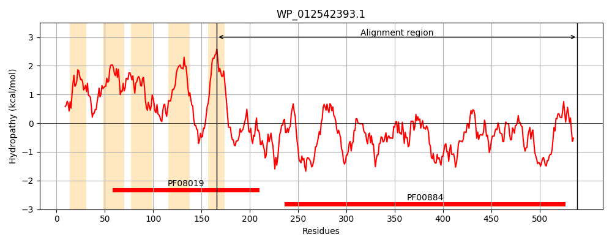
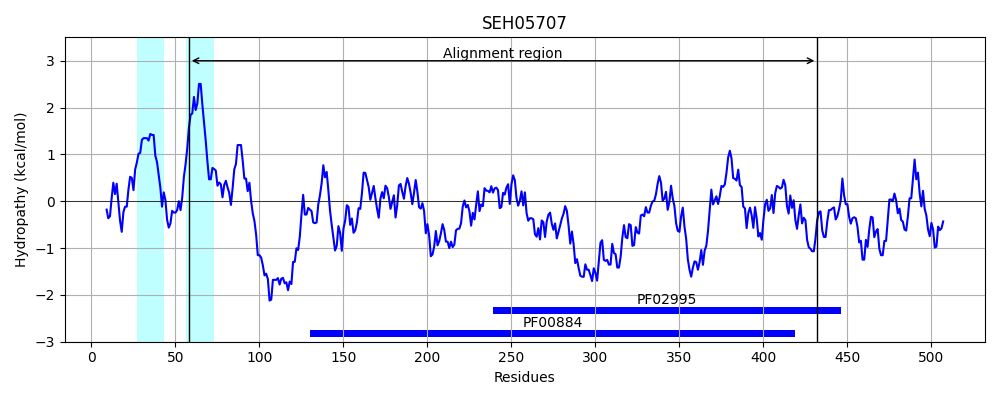

Hit Accession: SEH05707
Hit TCID: 2.A.127.1.7
Hit Description: gnl|BL_ORD_ID|20127 gnl|TC-DB|SEH05707|2.A.127.1.7 Phosphoethanolamine transferase EptB [Thiotrichales bacterium HS_08]
Mach Len: 399
e:0.000000
Query TMS Count : 5
Hit TMS Count: 2
TMS-Overlap Score: 0.750000
Predicted Substrates:None
BLAST Alignment:
Score: 134 , Bit scores: 56 bits, E-value: 2.2e-08, Alignment length: 399, Percentage identity: 22
Query: 166 LLIILVAALFYKDYASVFRNNKE--LVKSLSPSNS---IVALNSWYAHNRMDNLPLVKIGEDARQKPVMHSGPRKNLTIVVLGETSRAGNFSLGGYDRETNP--RLQQDDVVYFPKTTSCGTATAVSVPCMFSNMPRAHYDEELAHHQEGVLDILQRAGVQVLWNDND----GGCKGACDRVPHQNVTDLHLSGQCIDGECYDEVL----FHNLDSYIDNLKQDGIIVLHTIGSHGPTYYNRYPAEFKKFTPTCDTNEIQSCTQQQLTNTYDNTILYVDYVVDKAIKLLQSKQDKFTTSLVYLSDHGESLGEDGVYLHG----------LPYSIAPDTQKHVPMLLWLSPDYQQRYGVSSQCLQQQAKTKDYSQDNLFSTLLGLLGVSTHEYQAADDIL 539
LLI+ + ++ + + NKE L+ LS N+ V N YA+ + ++ D V R N+ ++++ E+ R + S+ GY R+T P + + F S T T S+ +F+ R E + + +R+G + + K A + + + + L+ + G D++L F+ + I N + VLH G+H P +K + + N I ++ N YDN+I Y D+V+ KA+K L+ T ++ SDHGE E + HG +P+ I H+P L L ++ + ++ K S ++F TL+ + +S+++ + + +L
Sbjct: 58 LLILFSVIICIISFSYIKKENKEFLLLPLLSVINNGFLYVKDNDLYANYKYKERDYIQ--RDIDDIKVHEERGRINV-LMIIQESLRGDHLSIFGYHRKTTPIQDIFFKNAYLFINAISNRTTTGPSLSTLFTGTIRVIKKE--IFKRSLIWQYAKRSGKHTFYITSHWIEWNFMKTAFTNLKYIDFINSPLAARASIGR--DDILTVDIFNQYLTKIKNNNKPFFGVLHFSGTHYPYSTPSQHRIWKPSKSSMNPNHI-----DKVINQYDNSIRYNDFVMGKALKHLEKLGLSENTIIILTSDHGEGFYEHKKFFHGKGNFWQEGIHIPFII------HIPESLKLLFSEEELFNLNKNIY------KYISNVDIFPTLMDIWKLSSNKKLSGNSLL 432 | Protein Hydropathy Plots: |
|---|
|  |  |
Pairwise Alignment-Hydropathy Plot:
|
|---|
 |